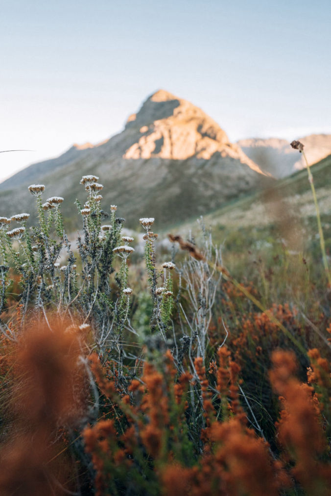
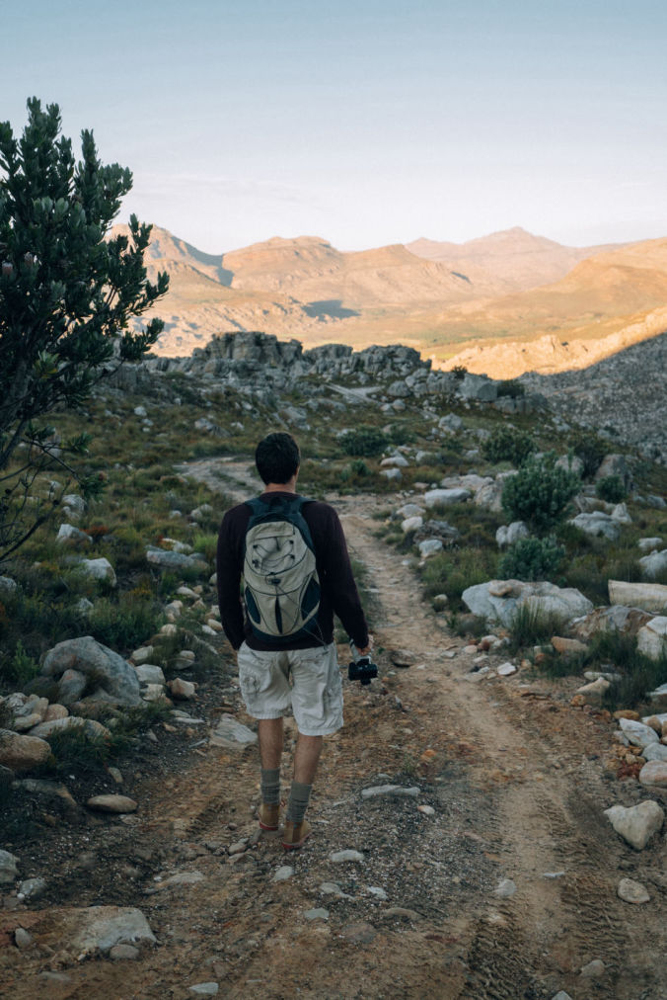
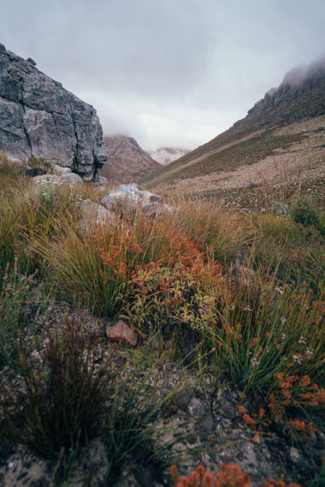
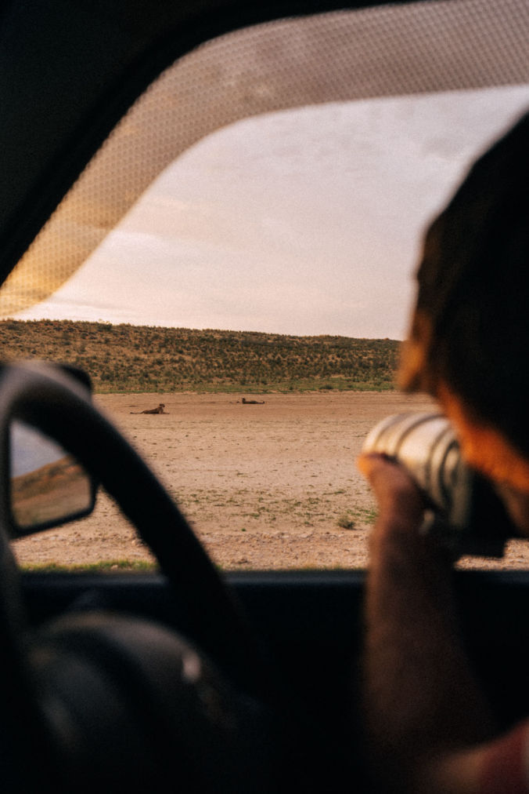
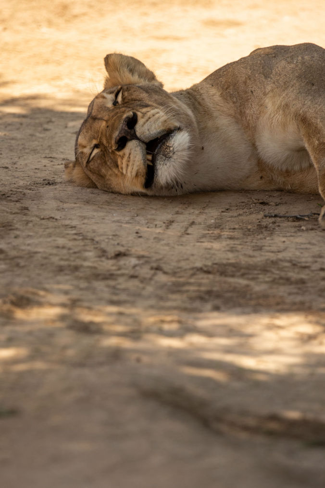
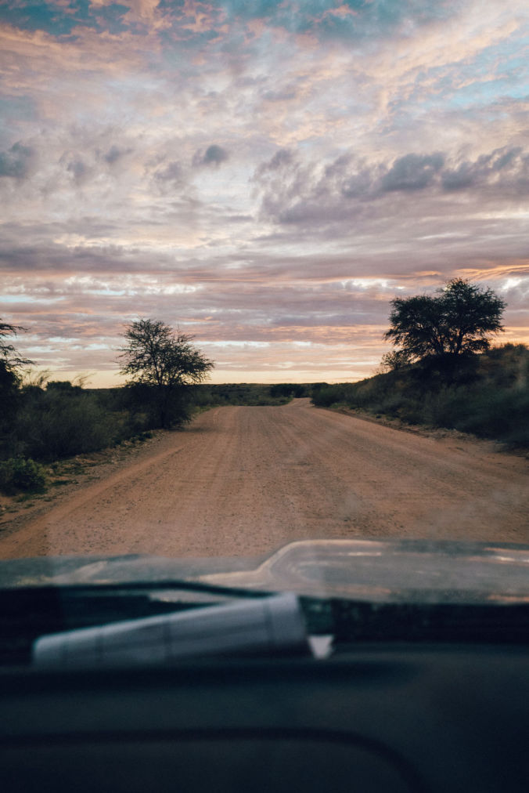
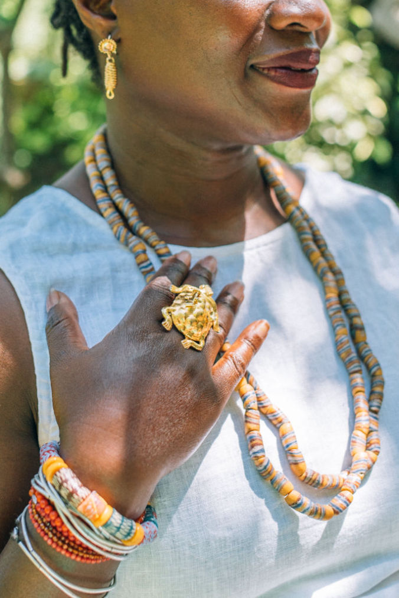
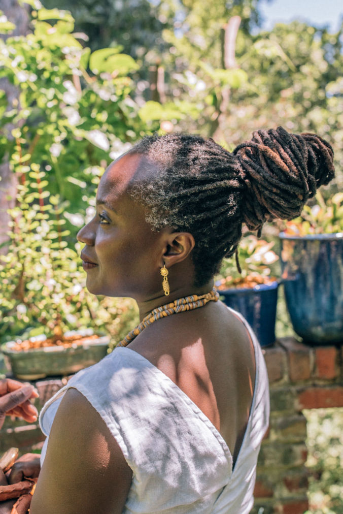
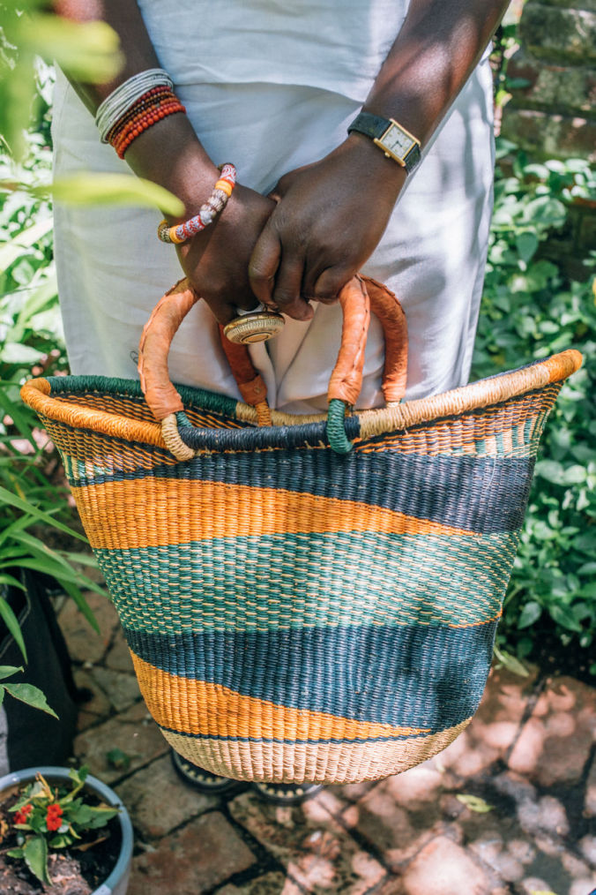

Looking for a videographer South Africa can be overwhelming. You might worry whether the video will be worth it, if it will get your message across, or if it will actually turn out the way you imagined.
That's where we come in! We're Katy and Eugene a creative videographer team who's videos get results, with our stress free process and story driven videos that not only look and sound amazing, but also get people to act.
Our process is thorough, with careful research, structure, filming, editing and strategy. We offer a range of videographer services, from social media content creation to event video production, drone videography to promotional videos for your website.
We have over 8+ years experience and clients in Cape Town, Johannesburg and across South Africa who keep coming back. We love working with small businesses and grass roots organizations, but our work has also been featured by larger clients such as CNBC and Michelle Obama.



Our videographer South Africa services get results because we take the time to deeply understand your brand.
1. Videos That Get Results
We’re here to turn your customers’ challenges into action that grows your business. Before we even pick up a camera, we spend time understanding your audience and the benefits of your product or service.
Using research, story planning, interview questions, and shot lists, we create a clear plan for every project. After filming and editing, you’ll get your finished brand videos for your website, plus simple tips on sharing them to maximize results.
“The finished product was just what we had in mind, and we continue to receive only positive feedback on it.”
— Paul Tickner, Kusini Safaris
2. An Easy, Stress-Free Process
As your videographer South Africa team, we make sure you feel relaxed on camera, so there’s no awkwardness or stress. Behind the scenes, we handle all the details: planning structure, organizing interview questions, creating shot lists, and coordinating logistics. During editing, we keep you in the loop with clear communication, making feedback easy. Every video is delivered on time and ready for social media, your website, or presentations.
“Professional but also very easygoing, and importantly, helped me feel relaxed during filming.”
— Sarah Rueger, Amaranthine Skincare
3. Story-Driven Videos That People Remember
Stories are how humans connect. We follow a simple story arc, highlighting the ups and downs, repeating key ideas your audience needs to remember, and including real, personal moments that feel authentic.
“Katy and Eugene completely blew our minds with the work they produced, goosebumps and wet eyes all round!” — Claire Wouters, Pic's Peanut Butter
4. High-Quality Video That Looks and Sounds Amazing
We treat every video like building a little world that’s yours. As your videographer South Africa team we carefully consider, colour, lighting, framing, sound. Even the smallest details are chosen to tell your story beautifully. Think of it as a documentary mixed with a commercial: real moments, perfectly polished.
“The footage is the best we’ve seen from our schools, the colours, images, and shots were perfect. Katy found a compelling story and captured it beautifully.” — Reshma Patel, Impact Network
Have a look at our videographer South Africa process to see why our videos work.
Whether you're looking for a social media videographer in Cape Town or drone videography in Johannesburg.
1. Research & Context
Before filming, we dive deep into your brand, audience, and unique story. We look at your competitors, similar creators, and trends so your videos feel authentic and reach the right people.
2. Structure
Every video we make follows three guiding principles:
Customer Journey – Take viewers from discovery to understanding to action.
Inspire, Educate & Relate – Motivate, inform, and show the human side of your brand.
Story Arc – Hook, challenge, build, and resolution keep viewers engaged.
3. Filming & Editing
As your videographer South Africa team we plan interviews, shot lists, and locations ahead of time, capturing everyday work, multiple interviews, and natural moments. Every video is thoughtfully crafted with attention to lighting, sound, framing, colour, and pace.
4. Learn & Refine
With our monthly social media packages, you receive your videos ready to post. We track engagement, refine hooks, themes, and formats, and adjust over time so your content keeps improving. We also offer flexible video options and drone videography South Africa, giving your content a fresh, professional edge.



Feeling overwhelmed about hiring a videographer in South Africa? Worried your video won’t capture your message, look amazing, or get results?
We’re Katy and Eugene, a friendly, expert videographer team with 8+ years of experience, trusted by brands across Cape Town, Johannesburg, and even global clients like CNBC and Michelle Obama. Our story-driven videos not only look and sound incredible, they get people to act.
Imagine a stress-free filming experience where we handle all the planning, structure, filming, and editing, while you relax on camera. With our strategy-led approach, social media packages, and drone videography, your brand will connect with your audience and get them to act.
We only take on a handful of projects at a time, so you get our full attention. If this approach feels right for you, you can message me here, with any questions.
katy@munjiri.com
Take a look at our videographer South Africa services.
Videography
Hire us to create videos for you! We can create great videos for you, but most importantly videos that get people to act.
Social Media Videographer / Content Creation
Monthly video packages, so you can show up online regularly, but have time to do the things you love.
1:1 Video Coaching
Up-skill yourself or your team. VERY tailored lessons.
Drone Videographer
Aerial footage, events, tourism and promotional videos.
Event Videographer
Professional event coverage, corporate events, conferences, celebrations
Vlog Videographer
Travel, lifestyle, or behind-the-scenes filming



Looking for a videographer in Cape Town, South Africa? We’ve worked with Cape Town creatives and brands like Coral & Hive, capturing their handmade rugs from studio to finished piece. Soul Design Jewellery, showcasing African craftsmanship in Kalk Bay. Hands of Honour, telling the story of a local social enterprise turning waste into opportunity and Dehye Collective, celebrating heritage, colour, and culture through interiors and accessories.
From planning and filming to editing and social media ready versions, we handle the whole process, making it simple, collaborative, and fun!